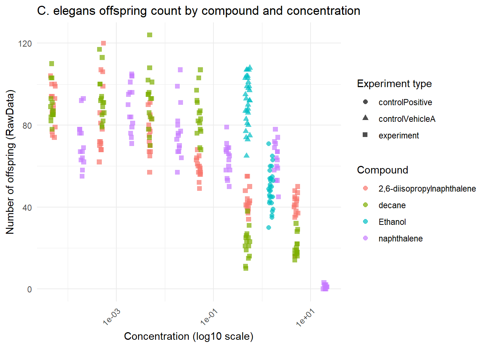
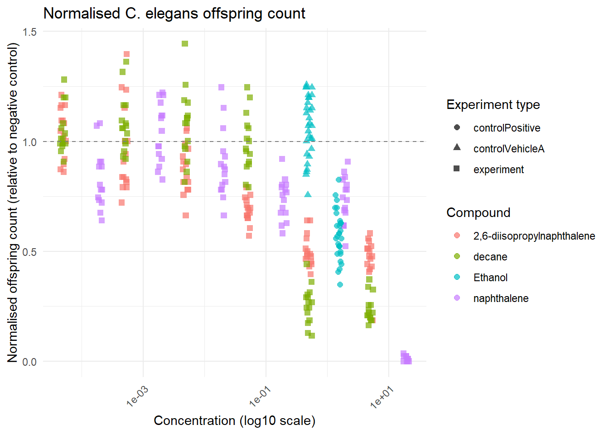

4 Reproducible Science
Reproducibility is one of the cornerstones of good science. In this chapter, I first reproduce a C. elegans dose-response experiment from a colleague’s data, and then evaluate the reproducibility of a published scientific article with shared R code.
4.1 4a. Reproducing a C. elegans Toxicity Analysis
4.1.1 Background
The data for this analysis comes from the HU lectoraat Innovative Testing in Life Sciences & Chemistry. C. elegans (roundworms) were exposed to varying concentrations of different chemicals, and the number of offspring was recorded as a measure of toxicity. This type of data is commonly analysed using dose-response modelling to determine the IC50 — the concentration at which 50% inhibition of reproduction is observed.
The variables of interest are:
RawData— number of offspring countedcompName— name of the chemical compoundcompConcentration— concentration usedexpType— whether the observation is experimental, a negative control, or a vehicle control
4.1.3 Step 2 — Inspecting the data
## Rows: 360
## Columns: 34
## $ plateRow <lgl> NA, NA, NA, NA, NA, NA, NA, NA, NA, NA, NA, NA, NA, NA, NA, NA, NA, NA, NA, NA, NA, NA, NA,…
## $ plateColumn <lgl> NA, NA, NA, NA, NA, NA, NA, NA, NA, NA, NA, NA, NA, NA, NA, NA, NA, NA, NA, NA, NA, NA, NA,…
## $ vialNr <dbl> 1, 1, 1, 1, 1, 2, 2, 2, 2, 2, 3, 3, 3, 3, 3, 1, 1, 1, 1, 1, 2, 2, 2, 2, 2, 3, 3, 3, 3, 3, 1…
## $ dropCode <chr> "a", "b", "c", "d", "e", "a", "b", "c", "d", "e", "a", "b", "c", "d", "e", "a", "b", "c", "…
## $ expType <chr> "experiment", "experiment", "experiment", "experiment", "experiment", "experiment", "experi…
## $ expReplicate <dbl> 3, 3, 3, 3, 3, 3, 3, 3, 3, 3, 3, 3, 3, 3, 3, 3, 3, 3, 3, 3, 3, 3, 3, 3, 3, 3, 3, 3, 3, 3, 3…
## $ expName <chr> "CE.LIQ.FLOW.062", "CE.LIQ.FLOW.062", "CE.LIQ.FLOW.062", "CE.LIQ.FLOW.062", "CE.LIQ.FLOW.06…
## $ expDate <dttm> 2020-11-30, 2020-11-30, 2020-11-30, 2020-11-30, 2020-11-30, 2020-11-30, 2020-11-30, 2020-1…
## $ expResearcher <chr> "Sergio Reijnders - Ellis Herder", "Sergio Reijnders - Ellis Herder", "Sergio Reijnders - E…
## $ expTime <dbl> 68, 68, 68, 68, 68, 68, 68, 68, 68, 68, 68, 68, 68, 68, 68, 68, 68, 68, 68, 68, 68, 68, 68,…
## $ expUnit <chr> "hour", "hour", "hour", "hour", "hour", "hour", "hour", "hour", "hour", "hour", "hour", "ho…
## $ expVolumeCounted <dbl> 50, 50, 50, 50, 50, 50, 50, 50, 50, 50, 50, 50, 50, 50, 50, 50, 50, 50, 50, 50, 50, 50, 50,…
## $ RawData <dbl> 44, 37, 45, 47, 41, 35, 41, 36, 40, 38, 44, 48, 43, 50, 16, 48, 42, 41, 44, 40, 38, 41, 37,…
## $ compCASRN <chr> "24157-81-1", "24157-81-1", "24157-81-1", "24157-81-1", "24157-81-1", "24157-81-1", "24157-…
## $ compName <chr> "2,6-diisopropylnaphthalene", "2,6-diisopropylnaphthalene", "2,6-diisopropylnaphthalene", "…
## $ compConcentration <chr> "4.99", "4.99", "4.99", "4.99", "4.99", "4.99", "4.99", "4.99", "4.99", "4.99", "4.99", "4.…
## $ compUnit <chr> "nM", "nM", "nM", "nM", "nM", "nM", "nM", "nM", "nM", "nM", "nM", "nM", "nM", "nM", "nM", "…
## $ compDelivery <chr> "Liquid", "Liquid", "Liquid", "Liquid", "Liquid", "Liquid", "Liquid", "Liquid", "Liquid", "…
## $ compVehicle <chr> "controlVehicleA", "controlVehicleA", "controlVehicleA", "controlVehicleA", "controlVehicle…
## $ elegansStrain <chr> "N2", "N2", "N2", "N2", "N2", "N2", "N2", "N2", "N2", "N2", "N2", "N2", "N2", "N2", "N2", "…
## $ elegansInput <dbl> 25, 25, 25, 25, 25, 25, 25, 25, 25, 25, 25, 25, 25, 25, 25, 25, 25, 25, 25, 25, 25, 25, 25,…
## $ bacterialStrain <chr> "OP50", "OP50", "OP50", "OP50", "OP50", "OP50", "OP50", "OP50", "OP50", "OP50", "OP50", "OP…
## $ bacterialTreatment <chr> "heated", "heated", "heated", "heated", "heated", "heated", "heated", "heated", "heated", "…
## $ bacterialOD600 <dbl> 0.743, 0.743, 0.743, 0.743, 0.743, 0.743, 0.743, 0.743, 0.743, 0.743, 0.743, 0.743, 0.743, …
## $ bacterialConcX <dbl> 8, 8, 8, 8, 8, 8, 8, 8, 8, 8, 8, 8, 8, 8, 8, 8, 8, 8, 8, 8, 8, 8, 8, 8, 8, 8, 8, 8, 8, 8, 8…
## $ bacterialVolume <dbl> 300, 300, 300, 300, 300, 300, 300, 300, 300, 300, 300, 300, 300, 300, 300, 300, 300, 300, 3…
## $ bacterialVolUnit <chr> "ul", "ul", "ul", "ul", "ul", "ul", "ul", "ul", "ul", "ul", "ul", "ul", "ul", "ul", "ul", "…
## $ incubationVial <chr> "1,5 glass vial", "1,5 glass vial", "1,5 glass vial", "1,5 glass vial", "1,5 glass vial", "…
## $ incubationVolume <dbl> 1000, 1000, 1000, 1000, 1000, 1000, 1000, 1000, 1000, 1000, 1000, 1000, 1000, 1000, 1000, 1…
## $ incubationUnit <chr> "ul", "ul", "ul", "ul", "ul", "ul", "ul", "ul", "ul", "ul", "ul", "ul", "ul", "ul", "ul", "…
## $ incubationMethod <chr> "rockroll", "rockroll", "rockroll", "rockroll", "rockroll", "rockroll", "rockroll", "rockro…
## $ incubationRPM <dbl> 35, 35, 35, 35, 35, 35, 35, 35, 35, 35, 35, 35, 35, 35, 35, 35, 35, 35, 35, 35, 35, 35, 35,…
## $ bubble <lgl> NA, NA, NA, NA, NA, NA, NA, NA, NA, NA, NA, NA, NA, NA, NA, NA, NA, NA, NA, NA, NA, NA, NA,…
## $ incubateTemperature <dbl> 20, 20, 20, 20, 20, 20, 20, 20, 20, 20, 20, 20, 20, 20, 20, 20, 20, 20, 20, 20, 20, 20, 20,…## # A tibble: 6 × 34
## plateRow plateColumn vialNr dropCode expType expReplicate expName expDate expResearcher expTime expUnit
## <lgl> <lgl> <dbl> <chr> <chr> <dbl> <chr> <dttm> <chr> <dbl> <chr>
## 1 NA NA 1 a experiment 3 CE.LIQ.… 2020-11-30 00:00:00 Sergio Reijn… 68 hour
## 2 NA NA 1 b experiment 3 CE.LIQ.… 2020-11-30 00:00:00 Sergio Reijn… 68 hour
## 3 NA NA 1 c experiment 3 CE.LIQ.… 2020-11-30 00:00:00 Sergio Reijn… 68 hour
## 4 NA NA 1 d experiment 3 CE.LIQ.… 2020-11-30 00:00:00 Sergio Reijn… 68 hour
## 5 NA NA 1 e experiment 3 CE.LIQ.… 2020-11-30 00:00:00 Sergio Reijn… 68 hour
## 6 NA NA 2 a experiment 3 CE.LIQ.… 2020-11-30 00:00:00 Sergio Reijn… 68 hour
## # ℹ 23 more variables: expVolumeCounted <dbl>, RawData <dbl>, compCASRN <chr>, compName <chr>, compConcentration <chr>,
## # compUnit <chr>, compDelivery <chr>, compVehicle <chr>, elegansStrain <chr>, elegansInput <dbl>,
## # bacterialStrain <chr>, bacterialTreatment <chr>, bacterialOD600 <dbl>, bacterialConcX <dbl>, bacterialVolume <dbl>,
## # bacterialVolUnit <chr>, incubationVial <chr>, incubationVolume <dbl>, incubationUnit <chr>, incubationMethod <chr>,
## # incubationRPM <dbl>, bubble <lgl>, incubateTemperature <dbl>Before proceeding, we check whether the data types are correct. RawData should be numeric, compName should be a character or factor, and compConcentration should be numeric. It was read as a character column, which is corrected below. Note that control rows have no meaningful concentration value and will produce NA after conversion — this is expected and handled in the plotting steps.
4.1.4 Step 3 — Visualising the raw data
Control rows with a concentration of 0 or NA are excluded from the plot, as log10(0) is undefined. These rows represent negative and vehicle controls which do not have a meaningful concentration on a log scale.
ce_data %>%
filter(!is.na(compConcentration) & compConcentration > 0) %>%
ggplot(aes(x = compConcentration,
y = RawData,
colour = compName,
shape = expType)) +
geom_point(position = position_jitter(width = 0.05, height = 0),
alpha = 0.7, size = 2) +
scale_x_log10() +
labs(
title = "C. elegans offspring count by compound and concentration",
x = "Concentration (log10 scale)",
y = "Number of offspring (RawData)",
colour = "Compound",
shape = "Experiment type"
) +
theme_minimal() +
theme(axis.text.x = element_text(angle = 45, hjust = 1))
Figure 4.1: Scatter plot of C. elegans offspring counts by compound and concentration. The x-axis uses a log10 scale. Different compounds are shown in different colours; shape indicates experiment type. Control observations with no defined concentration are excluded.
4.1.5 Step 4 — Normalisation to the negative control
To make results comparable across experiments and plates, the data is normalised to the negative control (controlNegative). The mean of the negative control observations is set to 1, and all other values are expressed as a fraction of this mean.
Why normalise?
Different experimental runs may yield different absolute offspring counts due to variation in worm health, temperature, or other environmental factors. Normalising to the negative control removes this batch effect and expresses all values as relative to what a healthy, unexposed worm produces under the same conditions.
What are the controls?
- Negative control (
controlNegative) — worms exposed to the solvent only (no compound). This represents 100% reproduction. All other values are expressed relative to this. - Vehicle control — similar to the negative control, used when the compound is dissolved in something other than water, to check that the vehicle itself has no effect.
- Positive control — worms exposed to a known toxic compound at a known concentration. This confirms the assay is working as expected; a strong inhibition of reproduction should be observed.
ce_data %>%
filter(!is.na(compConcentration) & compConcentration > 0) %>%
ggplot(aes(x = compConcentration,
y = RawData_norm,
colour = compName,
shape = expType)) +
geom_point(position = position_jitter(width = 0.05, height = 0),
alpha = 0.7, size = 2) +
scale_x_log10() +
geom_hline(yintercept = 1, linetype = "dashed", colour = "grey50") +
labs(
title = "Normalised C. elegans offspring count",
x = "Concentration (log10 scale)",
y = "Normalised offspring count (relative to negative control)",
colour = "Compound",
shape = "Experiment type"
) +
theme_minimal() +
theme(axis.text.x = element_text(angle = 45, hjust = 1))
Figure 4.2: Normalised offspring counts. Values are expressed as a fraction of the mean negative control (= 1). Values below 1 indicate inhibition of reproduction. Control observations with no defined concentration are excluded.
4.1.6 Plan for follow-up: Dose-Response Analysis
A natural next step for this data is fitting a log-logistic dose-response model using the drc package in R. The goal is to estimate the IC50 — the concentration at which 50% inhibition of reproduction is observed — for each compound.
The steps would be:
- Install and load the
drcpackage - Subset the data to one compound at a time (or fit models per compound using
group_by+nest) - Fit a four-parameter log-logistic model using
drm(RawData_norm ~ compConcentration, fct = LL.4(), data = ...) - Inspect model fit with
summary()andplot() - Extract IC50 values using
ED(model, 50, interval = "delta") - Repeat for all compounds and compile results into a summary table
This approach is described in detail in Ritz et al. (2015), PLOS ONE — a key reference for dose-response modelling in R.
4.2 4b. Evaluating Reproducibility of a Published Article
Note: This section is still in progress and will be completed at a later stage.
4.2.1 The article
(To be completed — a PLOS ONE article with shared R code will be selected using the search strategy described in the assignment.)
4.2.2 Reproducibility assessment
| Transparency criterion | Definition | Assessment |
|---|---|---|
| Study Purpose | Clear statement of research objective in introduction | — |
| Data Availability Statement | Explicit statement about data access | — |
| Data Location | Where data can be accessed | — |
| Study Location | Country/region of data origin stated in methods | — |
| Author Review | Contact information professionalism | — |
| Ethics Statement | Statement on ethical considerations | — |
| Funding Statement | Statement on funding | — |
| Code Availability | R code shared and accessible | — |